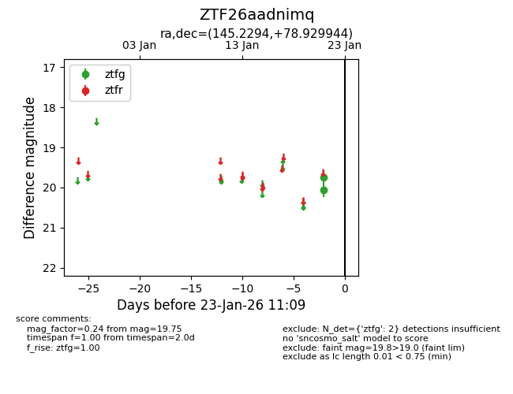
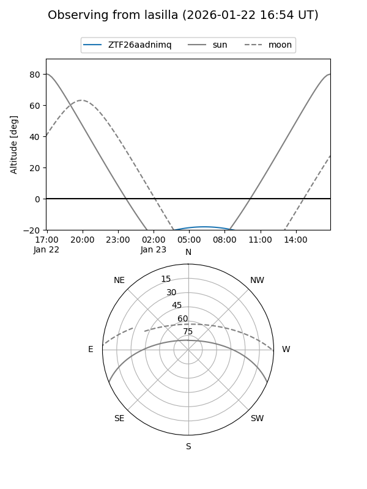
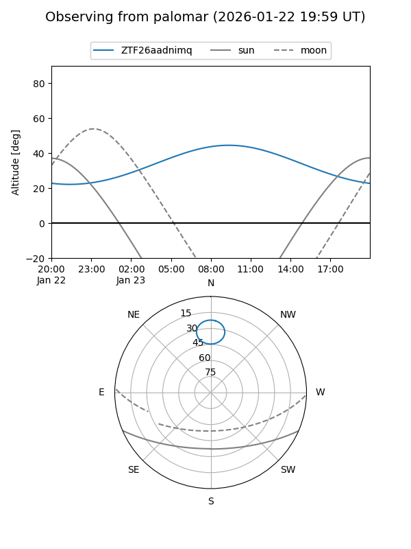

ZTF26aadnimq
Target ZTF26aadnimq at 2026-01-23 11:11
Aliases and brokers:
FINK: link
Lasair: link
ALeRCE: link
alt names
ZTF26aadnimq (ztf,fink_ztf)
Coordinates:
equatorial (ra, dec) = 145.2294,+78.92994
equatorial (HMS+DMS) = 09:40:55.06,+78:55:47.80
galactic (l, b) = (132.8127,+34.24008)
Flags:
Photometry:
last ztfg=19.75
2 ztfg detections
Lightcurve

Visibility


Additional plots